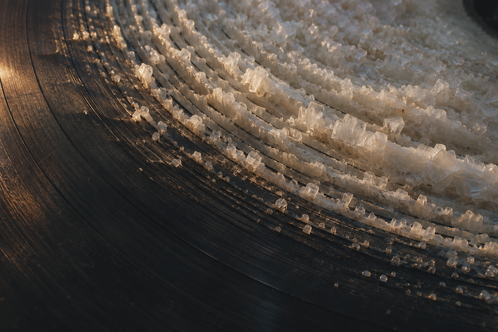

想象声音的沟槽长出脆白的结晶：细密的黑色弧线，慢慢成为可以触摸的起伏。

打开媒体文件 · 下载源码与提示词 · 来源与验证
ChatGPT 内置图像生成
1536 × 1024 PNG，原始字节数与 SHA-256 已核。生成一次；完成原图目视与独立审查。虚构 AI 静态图，不是真实唱片、矿物照片或科学实验。
本次从原创提示词新生成，未使用参考图、人物或第三方音视频素材。AI 输出不构成全球独创性或版权的法律保证；未穷尽检索相似作品。公开复用许可尚未选定。